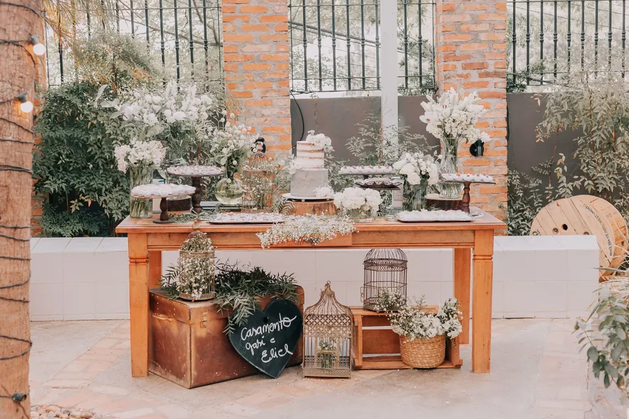
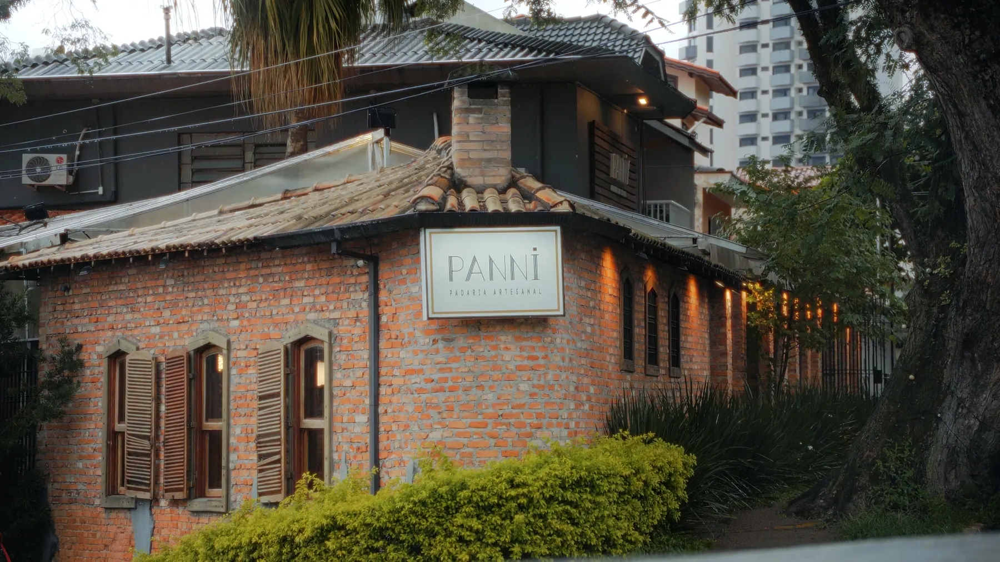
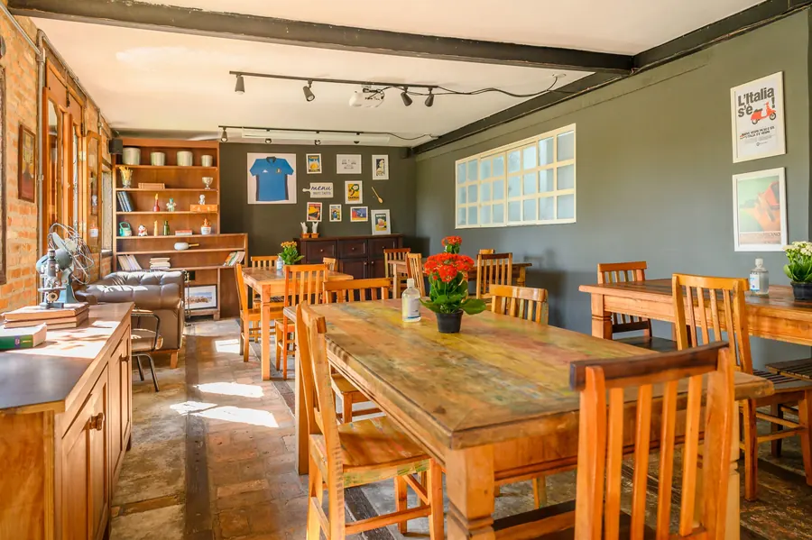
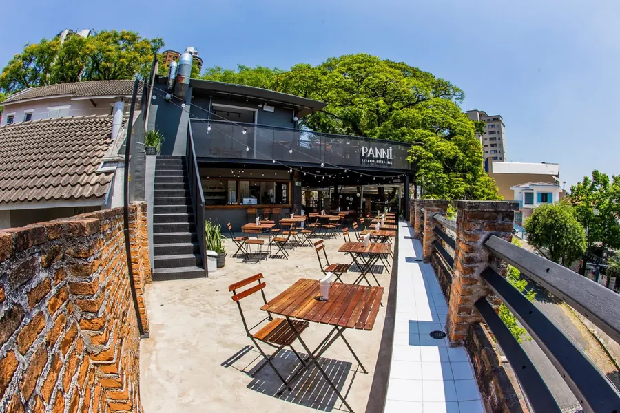
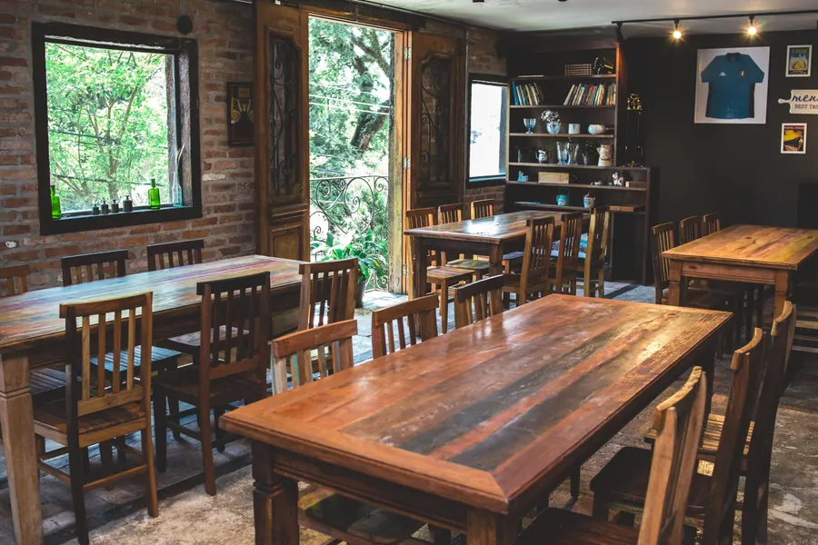
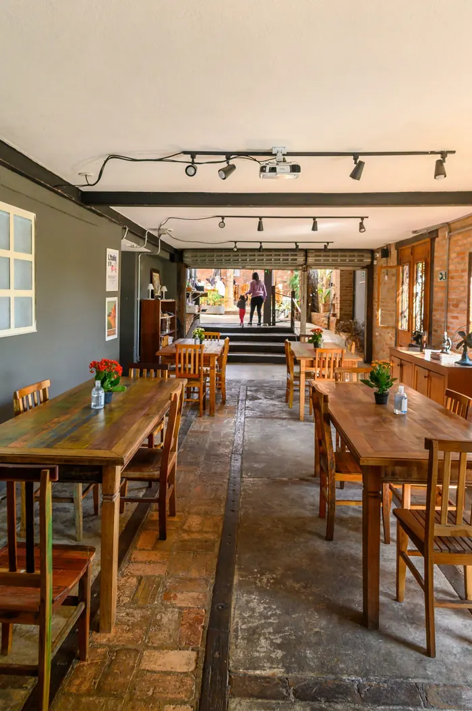
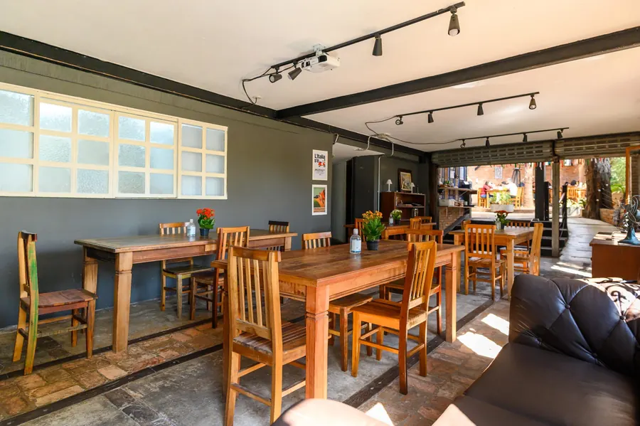
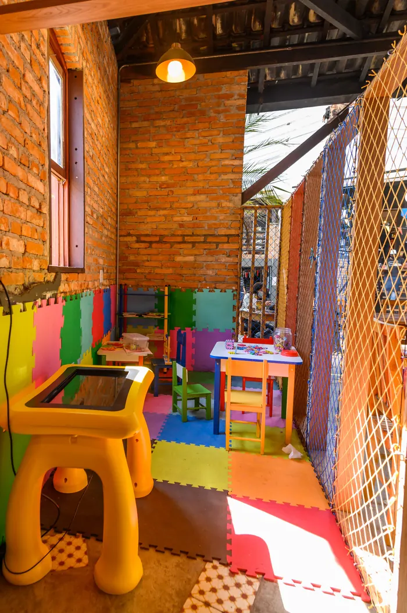
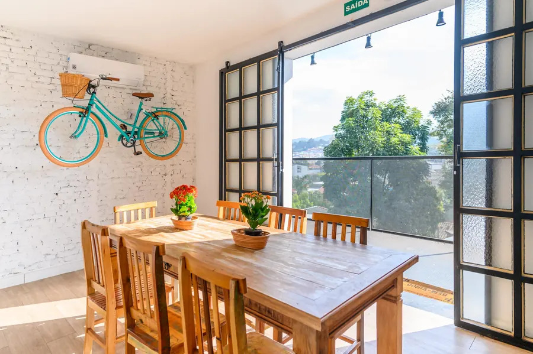
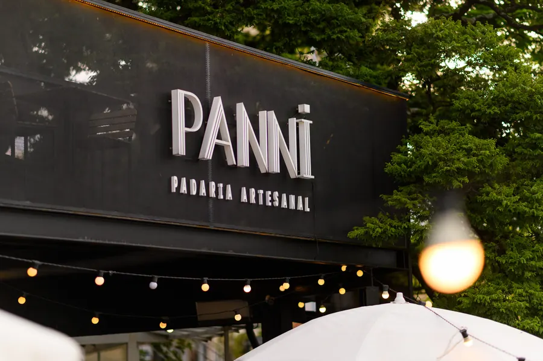

Térreo · acessívelEspazio Napoli
40sentados
60em pé
Sala térrea com acessibilidade e banheiros exclusivos. O layout flexível recebe bem diferentes tipos de evento.

Um casarão rústico e cheio de charme na Zona Norte de São Paulo, numa rua tranquila e arborizada. Café da manhã, almoço, brunch e pizza à noite, todos os dias.
Todos os dias, das 8h às 22h
A primeira Panni ocupa um casarão de tijolo aparente, com janelas de madeira, varanda e jardim. Lá dentro, mesas de madeira maciça, luz baixa e o cheiro de pão saindo do forno.
É o lugar para o café da manhã sem pressa, o almoço da semana, uma tarde de trabalho ou uma comemoração com a família.








A cozinha acompanha o dia: café da manhã com croissants, almoço executivo na semana, brunch no fim de semana e pizza com vinho à noite.
Dois espaços privativos e totalmente equipados, com menus exclusivos de comida e bebida. Você se preocupa só com o essencial.

Sala térrea com acessibilidade e banheiros exclusivos. O layout flexível recebe bem diferentes tipos de evento.

Climatizada, com varanda e banheiros exclusivos. Feita sob medida para celebrações íntimas.
